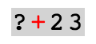
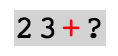
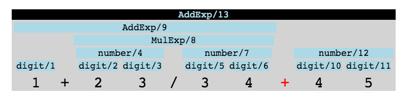
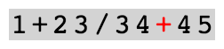
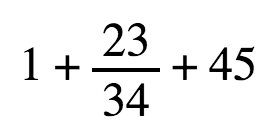

Ash: A Syntactic Editor
What is this madness?!
Full disclosure, I'm an able user of Vi. I love Vi for two reasons: It has modes, sorry Larry, and it enable navigation and editing using text objects. In Vi you don't edit text, you edit paragraphs, sentences, and words. This means that you can "talk" to your editor; "please delete the next 3 words" or "copy the paragraph". When you learn to talk the language, there is clear communication between you and the editor. Thought there is a problem. The problem is that code is not sentences and words, it's functions, expressions and declarations. So even thought, you are able to talk to your editor, it has no idea what it's doing. Of cause, many people have tried to bandage the system, and the editor might get to know about a function in one programming language, and that might work well in some cases, but deep down it's nothing but characters in a string.
This internal representation is why we can't have nice things. If plug-in builders has to reinvent the wheel, by more or less trying to learn your editor to read code every time they want to add a new feature, then it's not so strange that each plug-in can only be so advanced, and that the plug-ins does not necessarily talk together.
Ash tries to fix this. Ash is a syntactic editor. This means that the
inner representation of a file or buffer is not a string of characters,
but a syntax tree. For example, the expression you saw in the
editor as you opened the page, were 1+23+45. By the way the box in the
beginning of this blog, is the full editor, feel free to play around
with it. That expression is represented like a tree in Ash.
:display debug; to get back
write :display simple.
This different internal representation allows us to do a lot of cool things, that we can't, or are at least hard to, do in a normal textural editor:
- Syntactic movements — Move around in the file in logical portions. Like with Vi, but instead of talking in words and sentences, you can now say function and declaration.
- Syntactic editing — Editing is just removing or adding things to a tree. But the three has to be well formed. The tree can make qualified guessed depending on where you are in the tree. The well-formedness also mean that you have to say goodbye to your last syntax error. This editor simply doesn't allow you to make syntax errors because they can't fit in the tree.
- Advanced pretty printing — Because it is a tree, there is really no reason that you should be limited to view the code as text. Print things as it makes most sense to you.
Hasn't it been done before?
To my knowledge, no. But attempts at adding syntactic editing to other editors has been made. Most odious examples is something like snippets introduced in TextMate, or refactoring like in Eclipse. But this is more insertions into text than true syntax editing. While expanding a snippet you temporally get the ability to do really cool things, like creating classes with a few key strokes or automatically creating a getter and setter while making a new attribute. But as soon as you accept the change the code becomes text, and you have to edit it manually again.
More inspirational for me was two modes to modes for Emacs, paredit-mode and structured-haskell-mode. Paredit is a minor mode, that enables the user to quickly write Lisp. Structured Haskell does the same for, you guessed it, Haskell. They uses special commands to write new expressions and move around in the source. There is actually a nice YouTube video showing paredit in all its glory. Even though the two modes are cool, there are two major drawbacks: They only work on Lisp and Haskell, and it is way to easy to break out of the mode and break the syntax. The last thing is a clear side effect of being build on top of a, granted powerful, textural editor.
I have also been inspired by Ohm, which is a parser expression grammar creator, and it inspired me to build my inner representation.
Why would you do such a thing?
I set out with a goal to show that syntactic editing not only is possible but also better than doing textural editing. I refraced this into three high level questions.
- It is possible, to create a minimal viable prototype that edits syntax trees instead of text?
- How do we navigate in such a syntactic editor?
- Are edits more idiomatic, or is it more confusing to work in the syntactic editor than working in an normal editor?
I bet you didn't do it alone!
No, I had a lot of help. The project was completed as part of CS 237B spring 2016, taught at UCLA. The project, were developed over iterations with feedback and valuable advice from my classmates and the instructor, Alex Warth.
What did you do?!
First of all I created a framework that supports a syntactic editor. It is a lot of work to write a parser and find a general way of working with syntax trees, but more about that in the next section. Let's look at some of the cool things you can do with the editor first.
Movement
The most essential part of an editor is strangely enough not editing, it is movement. If you can't move around, you can't edit. You move around with Shift+h, Shift+j, Shift+k and Shift+l, yes, I did say I use Vi. Because we work in a tree, movement is now somewhat different than in a text editor:
- Shift+h moves to the previous sibling.
- Shift+j moves to the first child
- Shift+k moves to the parent.
- Shift+l moves to the next sibling.
In a syntactic editor, there is no such thing as a cursor, instead there is a focus on a specific node in the syntax tree. This first example shows the focus being moved around with the commands.
J-L-H-K.Even though that kind of movement makes sense for the computer, it does not make sense for the user. Navigating through list of numbers quickly becomes tedious work. In this example the user want to select the 6th digit in the number.
J-L-J-L-....To counter this, I introduce as special kind of movement. I call it smart movement. The purpose of smart movement is to remove a special kind of repetitive movement. This movement happens when you transverse lists. In syntax trees there exist two kinds of lists. Left-recursive lists, where the left most child can be of the same kind as the element or right-recursive lists where the right most child can be of the same kind. Since lists are a reoccurring element in syntax trees I have created a new set of smart movements.
- h moves to the previous list sibling.
- j moves to the first list child
- k moves to the list parent.
- l moves to the next list sibling.
If the element that is in focus is not a list the movement works as normal. But if it is a list it works like this:
j-l-l-l-....Or like this, if the list is left recursive:
j-l-l-l-....And this is everything that you need to move around in a syntax tree. Well, searching might be nice, but you can't have everything in life.
Editing
The next most important in thing in an editor is editing. Editing in a syntax tree is a lot different than in a textural editor. The first action that you will learn is the change command. Change takes the element in focus and replace it with something that you decide.
To start a change action, press c. Type a little, and then end the action by pressing enter.
Notice that the change action is smart; not only does it automatically
detect that the second operant of + is not present and adds a hole
"?", but it also figures out that the numerator of the fraction can
not be an addition without surrounding parenthesis. On a side node if
you press ↓, the editor will continue to produce
suggestions. This might be really usefull if you are not familiar with
the language and want help with the syntax. Pressing ↑ will
get you back again.
Let's talk a little about holes. Real syntax trees can not contain
broken pieces of syntax, but it is inherently human not to think very
structured — or the very least not in syntax trees. People want to
do things in another order, or with another goal in mind. So to allow
for that, Ash has holes. Holes are like Java's null. A hole can
substitute any piece of valid syntax. Sadly a hole also represent
a broken syntax tree so the editor will try to do anything
in its power to remove the holes. See what happens when we try to
leave a hole in expression "23 +".
As you can see, when the action is ended, the tool automatically jumps
to first hole it can find, and starts a new change action.
But, what happened in the last part?. Well you can insert holes while
typing. Holes can be represented differently in different language, but
the default is "?". This is a powerful feature because it means that
you can type in partial syntax. This becomes more important in an
minute. But first go to the editor and try to type "42+?/13+?+23",
press enter and try to measure how fast you can fill out the
holes with numbers. Now think about how long this operation would have
taken you in a textural editor.
So far we can only change parts of the code completely. Even though that is nice, when editing larger programs you might not want to throw away all, or a part of the code, just because you want to add something. Two actions has been created just for that; append and insert. Append a fills the first valid hole in the new tree with the old focused expression — insert i fills the last.
|  |  |
Insert "?+?" |
Append "?+?" |
Warning, this action do not have automatic parenthesis insertion, or work well with lists... sorry.
The last thing that is essential to editing, is to remove all the things bad code you have just written. There is two ways to delete elements in ash.
- d deletes an element. If there is only two element in the parent of the element. That element will be upgraded to the new main elements. Else the parent will also be deleted.Warning, slightly buggy.
- x extract an element. This is the opposite of delete. It will keep the current element, and replace it with the parent. It is possible to decide between to what layer that the element should be extracted by pressing ↓.
Multiple buffers and languages
Ash also supports multiple buffers, though there is no way for you to
see that. To create a new buffer type ":new <language>". Right now
there is two languages to play around with. math as you are already
familiar with is a simple language that can do arithmetic. f is a
more complicated functional language, that is almost, but not quite,
entirely unlike OCaml. Both of these language has been more or less
stolen from CS 237A taught at UCLA or from
Ohm.
Pretty printing
Each language comes with a some build-in pretty printers. For the
language math there are three pretty printers. Each of them can be
accessed by using :display <printer>. The images below are pictures
of the same syntax tree being printed with the different printers.
|  |  |  |
debug |
simple |
pretty |
The two pretty printers debug and simple are language agnostic ways
of displaying syntax trees. debug is the display closest to the
representation of the internal syntax tree. The numbers at each node
name is the id of the node. simple is just a print of all the tokens
in the tree in order.
The most interesting of the three is the pretty printer that accurately
depicts the math as math and not as a piece of text. Navigation is
a lot harder in a pretty printed tree, as up an down has a new meaning.
Play around with it and see what you think.
Saving and loading files
Let me answer that with a question; is that really important?
How is this possible?!
The entire thing is written in elm, except for some setup code in JavaScript. The code is available at github. Elm is a very cool functional programing language for front-end web developers, and without it I don't think that this project would have been possible. Its pureness and type checker catches most of my mistakes while I programed. Also this knowledge made me more confident that when I made rapid changes the editor still works.
There went a lot of work into getting the editor to work as an editor, but that is not really interesting or unique for a syntactic editor.
The grammar
The first important introduction was the Grammar, a module and
a embedded DSL that enables users to write very simple grammar in Elm.
The grammar system is very inspired by
Ohm which can represent parsing
expression grammars, but ash build-in grammar is much less powerful,
because it is missing the expressions. Below is some of the math
language, specified in the embedded grammar DSL.
grammar =
Grammar.grammar "?"
[ ( "Exp"
, rule
[ [ Ref "AddExp" ]
]
)
, ( "AddExp"
, rule
[ [ Ref "AddExp", Lex "+", Ref "MulExp" ] -- plus
, [ Ref "AddExp", Lex "-", Ref "MulExp" ] -- minus
, [ Ref "MulExp" ]
]
)
, ( "MulExp"
, rule
[ [ Ref "MulExp", Lex "*", Ref "ExpExp" ] -- times
, [ Ref "MulExp", Lex "/", Ref "ExpExp" ] -- divide
, [ Ref "ExpExp" ]
]
)
, ...
]
Notice the "?" in second line. That is how you specify how the grammar
should parse holes. The holes are added to all the end of all
expressions in all of the rules.
The syntax tree
Syntax tree is the product of parsing a string with a grammar. The
syntax tree is generic, and is should be able to hold all possible
trees. Here is the type declaration. It might not mean a lot to you,
but the polymorphism of SNode enabled a lot of cool tree collectors.
type alias SNode a
= { kind : SyntaxKind
, terms : List a
, size : Int
}
-- Recusive type to please the type checker
type SubTree = SubTree (SNode SubTree)
type alias SyntaxTree = SNode SubTree
SNode contains tree things a kind, which is a reference to an expression in a grammar somewhere, a list of sub nodes, called terms, and a size. The size is used to give each node an identifier. Id's are crucial, when we want to reference a certain node. Instead of giving each node a static id, the id is calculated in relation to where in the tree it is. The id's are assigned in a depth first manner. The problem with this dynamic identifier assignment is that it is not very efficient. To find the identifier of a node the entire tree has to be transversed to find a node with a specific id. To fix this I added the size to the node. The size is the total of nodes in the node including itself. Using this number it is possible to direct the search. Sadly because of the identifier system it is necessary to introduce tree collectors. A tree iterator could iterate the tree and would stop as soon as any value were returned.
type alias TreeIterator a = Int -> SyntaxTree -> Maybe a
A tree collector would collect there results of calling the iterator recursively and replace the nodes in the terms array with the results.
type alias TreeCollector a = Int -> SNode a -> a
One thing that turned out to be exceptionally hard was to make sure that after a tree was changed, code pointing to nodes in the tree was able to update the references to something that made sense. The solution was that, when a tree was updated, it also produced a function that could update any valid identifier to a new identifier pointing to the same node or at the nearest parent node. Generating this function automatically for any update turned out to be hard and resulted in some of the ugliest code in the history of man.
The parser and suggester
Creating the parser and suggester, was relative easy, but especially the suggester has some serious performance issues. The parser simply returns a syntax tree from a string. The suggester returns a list of partial results of parsing a string. There can, of cause, in some cases be infinite possibilities, therefore is the returned list a lazy list. A lazy list, is a list of on demand computations. This means that all suggestions are not created in one go, but is delayed until needed.
The suggestions are done by parsing the entire string. If the suggester
reaches the end of the string mid rule, the rest of the references is
filled with holes. Using this technique the suggester can infer "let
? in ?" from "l" alone. Given that the user did not like that,
then the next suggestion is produced by ignoring the first result and
continuing in the grammar. The design of the grammar is directly related
to the suggestions the user is getting. It's not always the ideal
solution that is produced by the suggester, but the initial guess seams
to be correct most of the time.
The pretty printer
This was where I realised I had done it all wrong. Writing the pretty
printer was very error prone and not especially pretty. Pretty printing
is done by transversing the tree and then producing html. The only way
to get the kind of node it was, was by matching with the syntax kind.
The syntax kind is a tuple of the name of the rule and the number of the
expression that created the syntax tree. Matching on a string is
inherently hard, and the type checker does not give a lot of help. This
example
from math, shows the fragile matching needed to pretty print the tree.
case tree.kind of
("AddExp", 0) -> tree `take2` \a b ->
grp "add"
[ a, operator "+", b ]
("AddExp", 1) -> tree `take2` \a b ->
grp "minus"
[ a, operator "-", b ]
("MulExp", 0) -> tree `take2` \a b ->
grp "multiply"
[ a, operator "⋅", b ]
("MulExp", 1) -> tree `take2` \a b ->
grp "fraction"
[ grp "numerator" [ a ]
, grp "denominator" [ b ]
]
...
Not only do we have to match on strings, which is slow, we are not
guaranteed that the tree is well formed. This means that the take2
function can fail and will produce malformed pretty printed html (it
will literally print "malformed") if the tree is not well formed.
This problem would of cause also apply to other areas, if the user would want to implement type checking or small step semantics in the editor.
What were you thinking?!
Well, I was driven by a simple idea; for computers to be able to help us they need to be able to understand us. The whole project has been leading up to have an editor that is able to write code like in the example below.
I think that this is a much more natural way of writing code, than the current textural editors. Getting to this point was not easy, and there is still a long way to a working editor. Besides the clear limitation of not being able to open and save files, undoing, and copy-pasting, there is a lot of things to be learned from this prototype. I think that this prototype illustrates that multilingual syntax editors are possible, and working with syntax trees directly is natural when you get the hang of it. The extended benefit of having syntactic relevant suggestions, gives a nice flow to the process of writing code. Lastly I think that syntactic holes are paramount for doing syntactic editing.
The directional movement in this prototype is a little hard to follow,
and especially in different displays. A lot more work has to be done
to make movement user friendly, but the list movement was a good start.
Sometimes special constructs would be misconceived as list, which is
confusing, and not all tools work on the lists in the same way.
It might be that in the future a notion of lists has to be build into
the syntax, which also direct movement.
The most confusing part in the movement is when the depth of the tree
changes visual direction. In the math example, the depth of the
fracture is vertical, while the depth of the addition is horizontal.
I have heard suggestions like a mini map displaying the debug tree,
which could help you with the users bearing, or have visual cues like
color or underlining to show the parent and the nearest siblings. Even
though that is it hard to move around in the tree I still think it is
unclear, if this is something that you can learn when using the editor
over time, and then you might even get more efficient. Please try it
out and see for you self! Any feedback will is very appreciated.
One of the biggest design decisions was where whether to have statically defined syntax trees or dynamically defined syntax trees. Where a static syntax tree definition would have the benefit of the type checker, both to do easy matching and to ensure that all operations on the tree returns a valid tree. On the other hand does the dynamically defined syntax tree enable operations that work across all languages. When starting out with the project I felt that the generic syntax tree approach was the most sustainable, but after I tried to do language specific actions like pretty printing I found that it was almost impossible. It is clear to me that some kind of golden middle way has to be found. I see a couple solutions to solving this. The most internal way of doing it would be to specify some core features that makes a syntax tree a syntax tree and then implementing them for each language. This probably requires something like Haskell's type classes. Another more dynamic way would be to keep the dynamically defined tree and then develop a DSL for working with trees. Both of these approaches would be interesting.
Using a limited PEG as the grammar worked out well, but the tight coupling between the grammar and the syntax tree were not ideal. If the syntax tree was separated from the grammar, it could be able to express more things. A PEG can only parse context free languages. XML, and therefore also HTML, is not a context free language. Choosing PEG as the only grammar would force our editor to never be able to edit XML. Some grammars, from which syntax trees are made from, use decomposition, and refers to other rules to transitive inherit their expressions. To enable the user to move around the tree without working their way through infinite nodes that only point to other nodes, the tree has to be trimmed. I also found some places where the grammar was not suited for my suggestions algorithm, and where the order of the rules had to be changed to get better results. All of this suggest that the grammar shouldn't be the template of the syntax tree, but more be used as a parser, that can fill an existing template.
An interesting problem with syntactic editors is something like comments. For a syntactic editor to be able work with comments, it needs to be able to parse and understand the semantic meaning of comments. Currently there are conventions for where to put comments, but they are not enforced by the parser. That needs to change.
One of the cool thing that Ash is able to do is the code suggestions, but the suggestion engine, did not work perfect and the user could find themselves forced to search through a long list of possible endings to get to the piece of syntax they needed. In the early versions of the prototype that was the only way to append or insert. I changed that so that it used the holes approach instead, but the suggestions are still in there. While the suggestions are valuable information for beginners, who do not know the syntax of the language (Note: To illustrate this point I have not written down the full syntax of the two languages here — did you figure out how to code in them?), it might not help advanced users as much. For them it could be cool to do things like semantic syntax trees. The trees would display like the normal syntax trees, but have build-in semantics. The tree might only be syntactic correct if it only access defined variables. Suggestions in such a tree would be something like a context aware auto completer, which would be very handy even for experienced programmers. By accident do the syntax holes also feels like the holes used in code synthesis, where complicated heuristics would try to fill out holes in a program. This correlation leads me to believe that syntactic editing could be the gateway drug to embedded code synthesis.
Yeah, okay... What's your point, man?!
Code is not text. Code is language and should be treated that way. When the computer speaks the same language as you, you can be more productive. Syntactic editing is not only possible, it is practical. Currently the technology has a lot of rough corners, but I believe that syntactic editing is the future, and I hope that I convinced you, or at least make you question the way we edit code now.